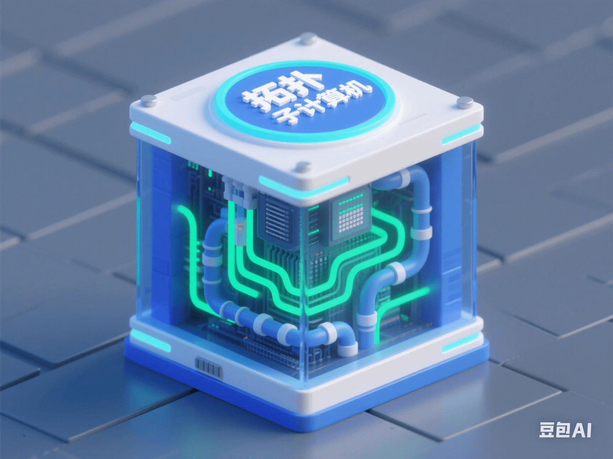

Microsoft's Breakthrough in Topological Qubits: How Will Topological Quantum Computing Make Cryptography Obsolete Overnight?
PeaceLove.Top Insights :2025-04-19
🧠 Quantum Computing: The 'Nuclear Weapon of the Future' Is Approaching
Quantum computing, often called the 'nuclear weapon of the future', is getting closer to each of us. Recently, Microsoft, in collaboration with a team from the University of California, announced a key breakthrough in the research of topological qubits, greatly enhancing the stability of qubits, bringing 'truly usable' quantum computing one step closer to reality 💥! The impact of this breakthrough is not just a celebration in the scientific community; it may also cause a disruptive shock to global network security 🌐⚠️.
🧬 Topological Qubits: The 'Anti-Shake Device' for Future Computing?
Traditional qubits are like delicate porcelain dolls-they 'collapse' (quantum state collapse) with the slightest disturbance. Topological qubits, on the other hand, are special qubits constructed using Majorana Zero Modes. 🌟 Its greatest advantages are:
- ✅ Less prone to errors
- ✅ Easier to scale into large-scale systems
- ✅ Support 'fault-tolerant computing' → Enable truly practical quantum computers
The Microsoft research team said, 'We have successfully created topological qubits with unprecedented stability using this system.' 🚀 This is the closest we've ever been to commercial-grade quantum computing!
🔓 What Does This Mean for Cryptography? Almost 'Game-Over'
Remember, almost all data-encryption protocols we use today (such as RSA and ECC) are based on the assumption that 'classical computers cannot factorize super-large integers or solve discrete logarithms within a reasonable time'. However, once quantum computers mature, these encryption algorithms will be cracked within seconds! Especially when combined with Shor's algorithm (quantum factorization method), RSA 2048-bit public-key encryption will completely fail. Your bank accounts, WeChat payments, medical records, and government secrets will all be 'exposed' 🫣💳.
💡 Quantum Computing vs. Modern Cryptography: Who Wins the Race?
| Project | Status |
|---|---|
| Classical cryptography (RSA, ECC) 🔐 | Targeted by quantum computing... |
| Topological qubits 📈 | Laboratory breakthrough, gradually moving towards practical use |
| Quantum-cracking algorithms (Shor/Grover) 🧨 | Theoretically complete, waiting for hardware to mature |
| 'Quantum-resistant cryptography' 🏰 | Under development, but slow to popularize |
In other words, it's an arms race for information security now: whoever deploys quantum-resistant encryption first can guard the gate of the future data world.
🛡️ What Are Countries Doing?
- ● 🇺🇸 NSA: Announced the full deployment of 'post-quantum encryption' standards by 2040
- ● 🇨🇳 Ministry of Industry and Information Technology: Promoting the construction of 'quantum-secure networks' and 'quantum-communication base stations'
- ● 🇪🇺 European Quantum Flagship Program: Investing over 1 billion euros annually to support quantum research
- ● 🌐 NIST (National Institute of Standards and Technology): Has released 4 preliminary 'quantum-resistant cryptographic algorithms'
🧠 Why Are Topological Qubits the Real 'Turning Point'?
In the past, quantum computing mostly remained in the laboratory stage with 'dozens of qubits', with high errors and uncontrollability. The rise of topological qubits means:
- ● 🧩 Improved quantum fault-tolerance: No longer as fragile as building blocks
- ● 🛠️ Scalable mass production: Commercialization becomes possible
- ● 🧪 Support the operation of more complex algorithms → A truly 'running' quantum computer 💨
Once deployed, the global data-protection system will face a full-scale reconstruction 📉.
📣 What Should We Worry About?
- 1. 🕵️ Hackers or state attackers may deploy quantum-cracking devices in advance
- 2. 🧾 Current 'encrypted' information may be 'archived and decrypted' (Harvest now, decrypt later)
- 3. 💼 Systems based on asymmetric encryption, such as blockchain and Bitcoin, may suffer a fatal blow
✅ What Should We Do?
Don't panic! It's still a 'buffer period'. You can:
- ● 📚 Learn about 'post-quantum encryption algorithms' (such as Lattice, Multivariate, Hash-based)
- ● 📦 Enterprises should upgrade their network-security architectures and layout quantum-security solutions
- ● 🛡️ Ordinary users should pay attention to whether financial, medical, and cloud-service platforms are undergoing 'quantum-resistant upgrades'
🔮 Conclusion: The Quantum 'Nuclear Explosion' May Be a Few Years Away, but the Countdown Has Started
Microsoft's breakthrough in topological qubits is not the end but the beginning. It may invalidate all the cryptographic systems and security nets we use today. Just like the moment when the Internet era began, this is not a patent of the tech circle but a 'warning' for everyone 📣. 📌 What do you think should be re-thought the most after the quantum era arrives? Welcome to leave a message and discuss together 🧠💬.